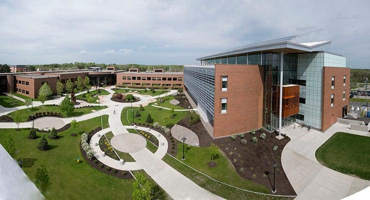
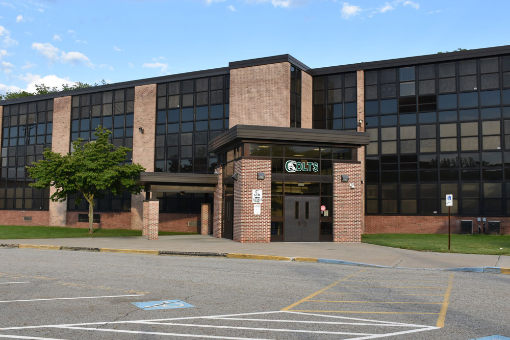

Dominique Molee's Education

Rochester Institute of Technology
Rochester Institute of Technology
2017 - Present
RIT 101:
- Located in Rochester, NY
- Student body of about 19,000 students
- Recognized for its challenging and competative programs
- Mascot is RITchie the Tiger
- Division 1 Hockey Team
- Unique in that there is no football team
Involvement:
- Major: Computing and Information Technology
- Minors: Computer Science, Digital Business
- Immersion: Psychology
- Women in Computing
- WiCHacks
- RIT Theme Park Enthusiasts
 Zagreb, Croatia
Zagreb, Croatia
Rochester Institute of Technology Croatia
Summer 2018
RIT Croatia 101:
- Two Croatia campuses: Zagreb, Croatia and Dubrovnik, Croatia
- Over 850 students
- Graduate with both American and Croatian degree
- Study in English
- Croatian students encouraged to study abroad in America or United Arab Emirates
Involvement:
- Studied abroad from May, 2018 until July, 2018
- Earned psychology immersion
- 1-week educational traveling to Munich, Germany and Vienna, Austria

Kinnelon Public High School
Kinnelon Public High School
2013 - 2017
Kinnelon High School 101:
- Located in the small town Kinnelon in Northern New Jersey
- About 670 students
- Sports teams are "the Kinnelon Colts"
- School colors are white and dark green
Involvement:
- Give Back Club Member
- Peer Mentor
- Was in honors band for the trumpet
- Girl's Who Code Co-Founder and Instructor
- Varsity Soccer